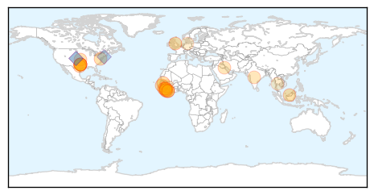

Chikungunya
30-Day Web Trend
0 alerts, 0 warnings

30-Day Twitter Trend
0 alerts, 0 warnings

Article Locations
Article Confidences

Top Articles:
Top Tweets:
-
No tweets found for Apr 28, 2015
Ebola
30-Day Web Trend
0 alerts, 0 warnings
30-Day Twitter Trend
0 alerts, 0 warnings
Article Locations
Article Confidences

Top Articles:
- 0.999
- Health officials say CMC patient tested negative for Ebola
- 0.999
- Too many dying in Sierra Leone as result of Ebola response not virus itself – report
- 0.999
- Ebola scare becomes Cleveland MetroHealth's first test under new response guidelines (photos, video)
- 0.999
- Ebola Jumps to Senegal as Case Confirmed in Guinean Man
- 0.998
- Ebola made vulnerable Liberians to fall back into poverty
- 0.998
- Ebola: It’s not over
- 0.996
- Prompt contact tracing disrupts Ebola virus transmission into Senegal
- 0.994
- News Scan for Apr 27, 2015
- 0.992
- Liberia stands to be declared Ebola-free on May 9 if…
- 0.989
- Officials: Patient tests negative for Ebola, taken out of isolat
- 0.979
- Statement by President Koroma at the Asian African Conference– Jakarta, Indonesia April 23, 2015
- 0.951
- Big Cities Health Coalition Urges Policymakers to Restore Public Health Funding: "Local Emergency Preparedness At Risk"
- 0.949
- Fiancée chronicles love, life with man who died of Ebola in Texas
- 0.941
- IU School Of Medicine Alum Kent Brantly To Address 2015 Class
- 0.936
- President Koroma's Independence Day message to the nation
- 0.904
- Local organization combats Ebola crisis in Liberia, receives
- 0.858
- Dallas County health chief: Agency wasn't ready for Ebola
- 0.843
- Dallas County health chief says they weren't ready for Ebola
- 0.823
- Government to continue building RSLAF’s capacity to the highest level of professionalism-VP Foh
- 0.811
- MoH unveils 1st educational film on Ebola
- 0.810
- The tragic love story of America's first Ebola patient
- 0.804
- Breakthrough in Ebola vaccine development
- 0.653
- As pupils head back to school…Precautions should be taken « Awoko Newspaper
- 0.597
- World Malaria Day 2015: A Conversation between Allan Schapira and Lorenz von Seidlein
- 0.581
- SRSG Ibn Chambas meets political actors in Guinea - Guinea
- 0.571
- Ebola-ready jet prepared for take off
- 0.558
- Ellen congratulates Sierra Leone on 54th independence anniversary
Top Tweets:
- 0.898
- Too many dying in Sierra Leone as result of Ebola response not virus itself ... - The Guardian http://t.co/PcyyVfg32Y ebola EVD
- 0.898
- Too many dying in Sierra Leone as result of Ebola response not virus itself ... - The Guardian http://t.co/DImdHdSOLo ebola EVD
- 0.768
- Carolinas Medical Center treating patient with Ebola-like symptoms - Charlotte Observer http://t.co/7vGypfvBJz ebola EVD
- 0.749
- CMC treating patient with Ebola-like symptoms - WCNC http://t.co/NvctIaVs7f ebola EVD
- 0.721
- RT: Latest Ebola figures show SierraLeone owning the beast. Confirmed cases grinding to a halt-only 40 this month http://t…
- 0.721
- RT: Latest Ebola figures show SierraLeone owning the beast. Confirmed cases grinding to a halt-only 40 this month http://t…
- 0.717
- Local organization combats ebola crisis in Liberia receives support nationwide - WROC-TV http://t.co/WqPZKRmfu7 ebola EVD
- 0.710
- Dallas health department was under-equipped to handle Ebola alone says chief ... - Dallas Morning... http://t.co/FxcKzhN1WR ebola EVD
- 0.643
- RT: Spot the error; $5.1 bn to control Ebola but just $6.9 million to setup 'African CDC' to help stop future epidemics. …
- 0.629
- iLab a Tech Refuge in Liberia's Capital Finds Solutions to Ebola Crisis - Forbes http://t.co/gRFabOVGKS ebola EVD
- 0.628
- Nine Ways We Are Beating the Ebola Epidemic in West Africa http://t.co/RrApgQdlNC via
- 0.605
- Too many dying in Sierra Leone as result of Ebola response not virus itself ... - The Guardian http://t.co/5CDjfEGeVT
- 0.573
- Breakthrough in Ebola vaccine development - The Hindu http://t.co/rlnyKiiWFZ ebola EVD
- 0.561
- Amid Ebola outbreak West African governments try to isolate media. AttacksOnPress http://t.co/AzE0XXYFQR
- 0.516
- Ebola epidemic has caused a $2.2 billion economic hit for countries in West Africa http://t.co/xZLnzMwrfS
- 0.512
- RT: Guinea however has had 86 confirmed Ebola cases this month while small compared with past levels remains a source http://…
- 0.512
- RT: Guinea however has had 86 confirmed Ebola cases this month while small compared with past levels remains a source http://…
- 0.505
- Fiancée of First U.S. Ebola Victim Can 'No Longer Sleep at Night' - People Magazine http://t.co/Pun7GbNfvX ebola EVD
- 0.505
- Fiancée of First U.S. Ebola Victim Can 'No Longer Sleep at Night' - People Magazine http://t.co/BIVkrmayWf ebola EVD